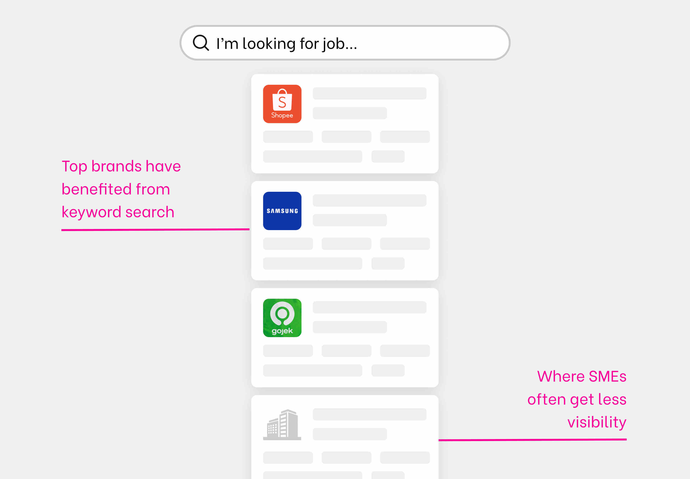
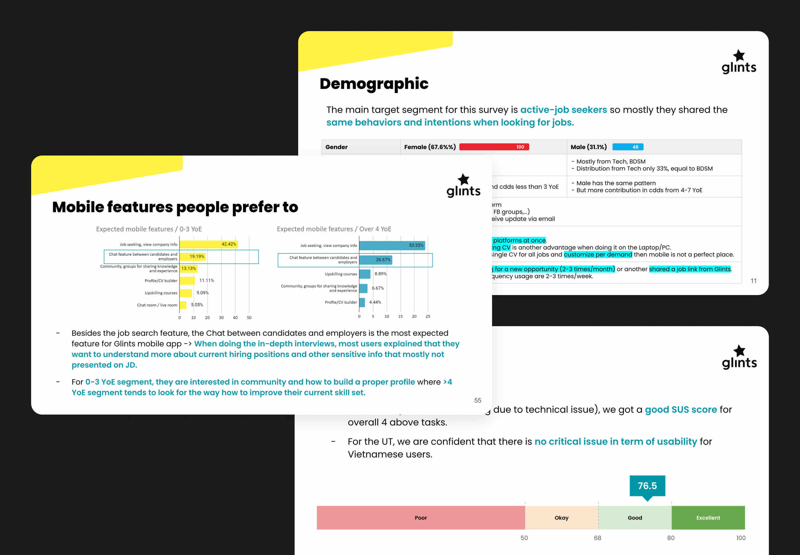
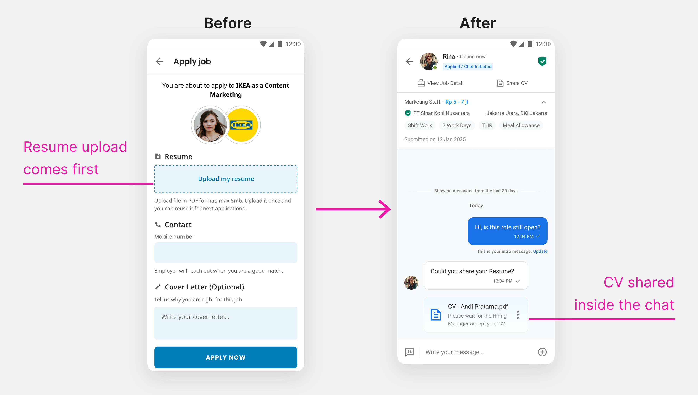
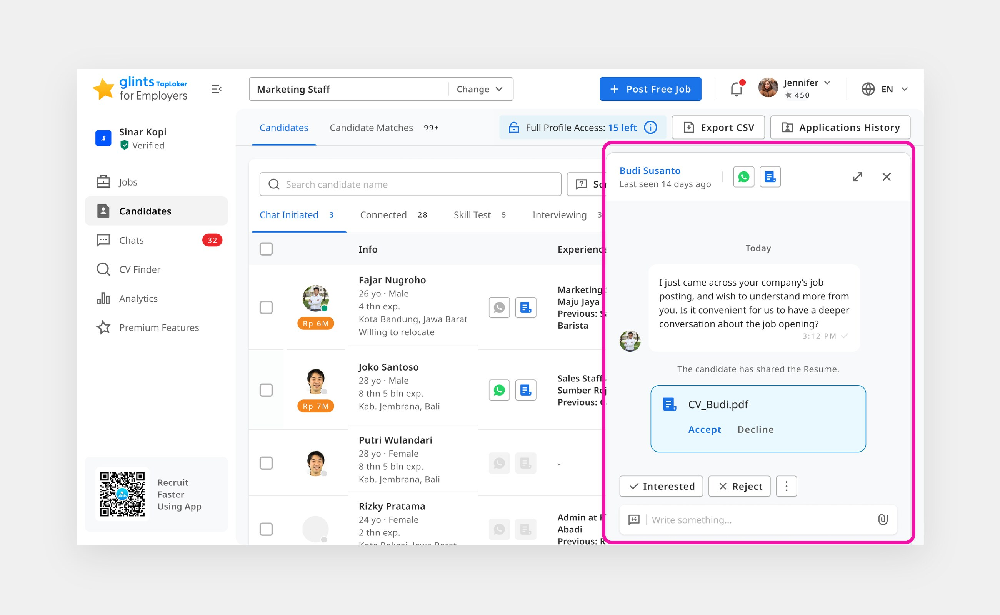
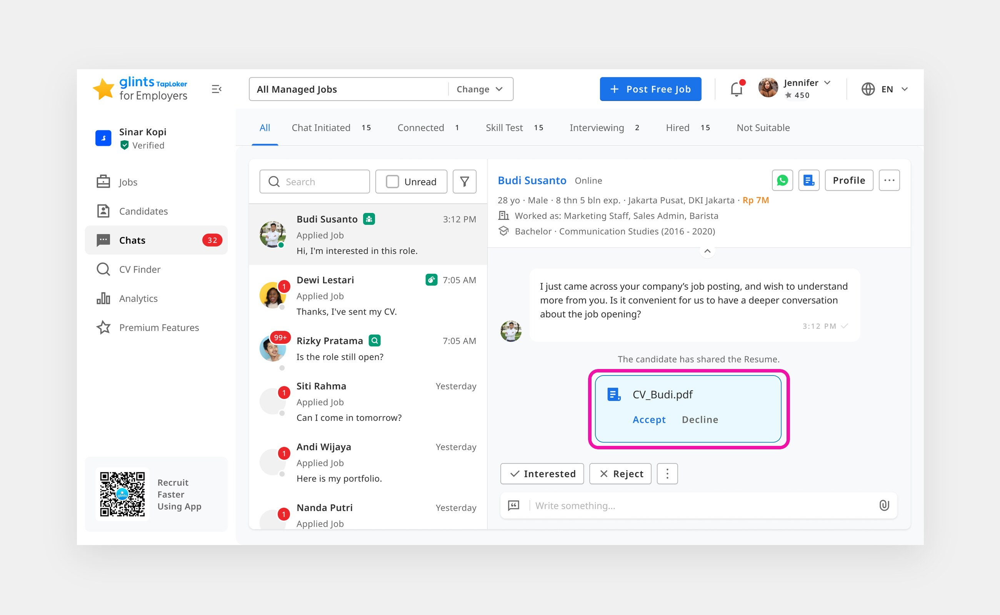

From Cold Application to Conversations
Making Chat the First Step of Applying
7 min read
Hiring in Southeast Asia runs on phones and small businesses. Applying on Glints still worked like a desktop job board: send a resume, then wait, often for nothing.
I joined Glints in Q2 2022 to launch its app in Vietnam, as designer and, in practice, its PM. The question we ended up working on was bigger than the app: how do candidates and employers start talking sooner?
We didn't remove the resume. We moved it from the first step to a later check, and made chat the first action.
Glints' Application Loop Was Breaking
People were showing up on mobile, but their interest wasn't turning into applications, or into replies.
Traffic without engagement Mobile brought 2.3x more traffic than desktop, but mobile active users were half of desktop's.
Sign-ups that didn't apply 80% of new sign-ups didn't apply on their first day. Half of them opened a job, then left.
Applications that got no answer Only about 20% of applications were ever processed by the employer.
Source: Glints funnel analytics at the time.
Search made it worse for the employers we cared about most. Keyword search rewards names people already type, so known brands filled the top of the results. Small businesses, often the ones that needed to hire fastest, sank to the bottom, where candidates rarely scrolled.

A search for "job": known brands at the top, small businesses at the bottom.
The loop broke on both sides: candidates stopped before applying, and employers stopped before replying.
Resume Became the First Barrier
Candidates had to prove themselves before they knew whether anyone would answer.
Before designing the Vietnam app, I ran our first research there: a survey with 148 responses and 11 in-depth interviews with prototype tests. Two things stood out.
After job search itself, chat with employers was the feature people most wanted in the app. And the worst moments didn't come while applying. They came after, when nobody replied.

From my 2022 research report: chat with employers ranked second only to job search.
"I've applied to dozens of jobs and I rarely hear back. Employers view my resume, but nothing happens. I don't even know if my resume is good enough."
A recent graduate in Ho Chi Minh City, 2022 interviewsThe resume still mattered. It just shouldn't be the gate.
Chat Could Unlock a Faster Hiring Loop
China had already shown what happens when hiring starts with a conversation.
Boss Zhipin built China's leading hiring app on direct chat between candidates and bosses. Its users opened the app 8.1 times a day, against 4 to 6 times on traditional job platforms. And 97% of its paying companies were small businesses, the same customers we wanted to win.
Source: internal study of Chinese hiring platforms, Aug 2022 (QuestMobile data, Jun 2022).
Job seeker
Employer
Leadership made chat the bet for Vietnam, then for Indonesia. It matched what I had seen in research, so the question for design was clear: how do you make chat the first step without taking away the screening a resume gives employers?
Hypothesis: resume-first hiring was too slow for a mobile, small-business market. Chat could make the loop faster.
The Key Decision Wasn't Removing the Resume
It was to stop making the resume the first commitment.
We looked at two lighter options first. Each fixed one part of the problem and left the other.
For candidates, "Chat to apply" replaced "Apply" on the job page. Instead of a form that starts with "Upload my resume", applying became the first message of a conversation. The employer asks for the resume when they want it.

Before: the resume as the gate. After: chat as the first action, with the CV asked for inside the conversation.
Chat only works if employers answer, so the employer side mattered as much. Instead of a separate inbox they'd forget, chat went into the screens employers already used to screen candidates. From the candidate list, a chat widget opens on top, so the employer never leaves the table.

The chat widget opens over the candidate list.
For working through many conversations at once, the full Chats page keeps the candidate list beside the conversation. Accepting a CV, opening WhatsApp and moving a candidate on all happen inside the chat.

The Chats page: candidates beside the conversation, and the CV accepted in the chat.
We kept the resume as a later check, so employers kept the signal they trusted.
Vietnam: A Slow Start, Then a Fix Every Week
Candidates started chatting right away. Employers didn't reply.
Chat went live in the Vietnam app on 3 March 2023. In the first week, only 3.4% of chats got a reply. The bottleneck wasn't the candidate side. It was employers who didn't know the chat was there, or didn't check it.
So we treated the reply rate as the product, on both sides. Almost every week, we shipped something that made replying easier or more visible. Most of the work was on the employer side: chat had to become part of how employers already screened candidates, not one more place to check.
Candidate app
Employer web
By May, about 30% of chats got a reply within two weeks. Boss Zhipin's own benchmark was around 20%.
The bigger change was in connections. In a chat, there's no separate shortlist step, so we measured connections instead: a shortlist, a CV exchange or a phone exchange.
Share of applications that led to a connection, Vietnam. Source: Vietnam weekly business review, Jun 2023. After launch, the data counts chats only, about a tenth of the earlier application volume, so the two halves aren't a like-for-like comparison.
About 8% of applications led to a connection before chat. With chat, it was 30–39%.
Bringing It to Indonesia
A bigger market, and a lot changing at the same time.
After Vietnam, I adapted the design for Indonesia, Glints' largest market. Chat to apply launched there on 7 July 2023, together with a new application form that no longer required a CV for any job category.
Two things changed on the way. Indonesia's application form already had screening questions built for its market, so chat to apply had to work with them rather than around them. And in Vietnam, candidates sent their CV by hand when the employer asked. In Indonesia, we sent it automatically, so more applications reached employers with a resume attached.
Sign-up-to-apply went up in the weeks after launch. But marketing spend and targeting changed in the same window, and so did the application form, so I don't read the rise as chat alone. Chat also started small: in late August, about 5% of connections came through it. Most still came from employers updating an application's status.
A launch that ships with other big changes can't be measured cleanly. Next time, I'd plan the measurement before the launch date.
What It Led To
The bigger effect was on the product. Chat became the centre of the employer app I designed and launched in 2024, where processing candidates happens inside the conversation.
Two years later, research showed that employers still screened in the candidate table, and used chat to follow up. So I proposed connecting the two instead of choosing one. The new candidate profile and chat, with CV and conversation side by side, shipped in 2026.
Reflections
- What to replace matters more than what to add. The hardest design decision wasn't building chat. It was deciding the resume would no longer be the first step.
- A two-sided product is only as fast as its slower side. Candidates adopted chat on day one. The work that moved the numbers was on the employer side.
- Measure the bet, not just the launch. Vietnam had a clean read. Indonesia didn't, because too much changed at once.
Built with the Vietnam marketplace team: a product lead, engineers on app and web, and our researchers, who helped with the 2022 study and later studied why employers did or didn't adopt chat.